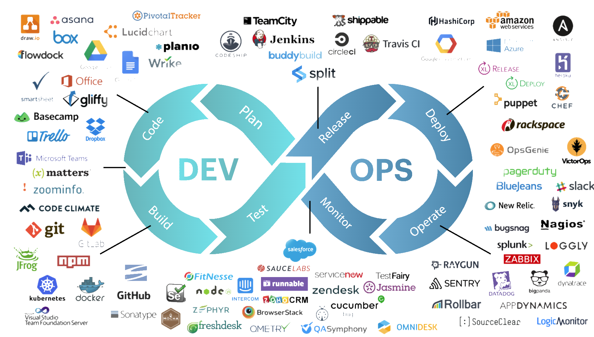
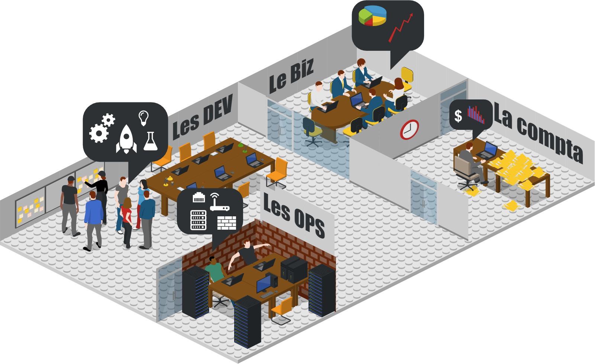
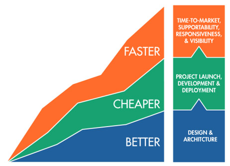
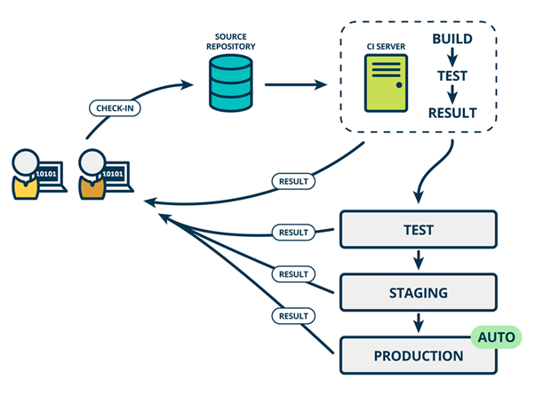
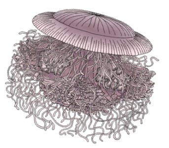
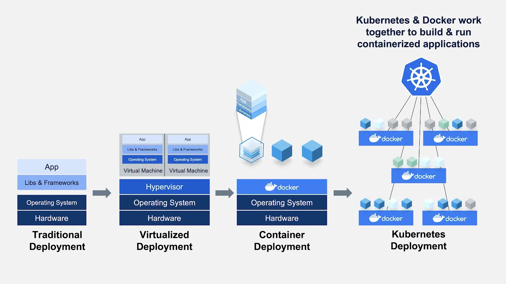
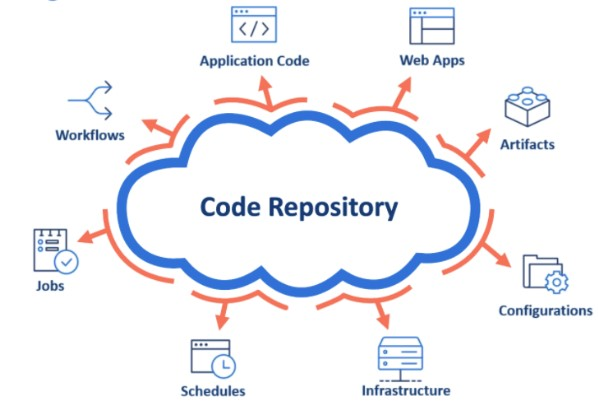
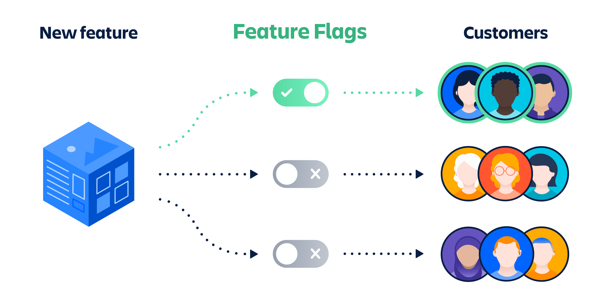
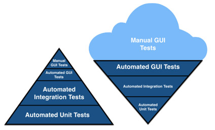
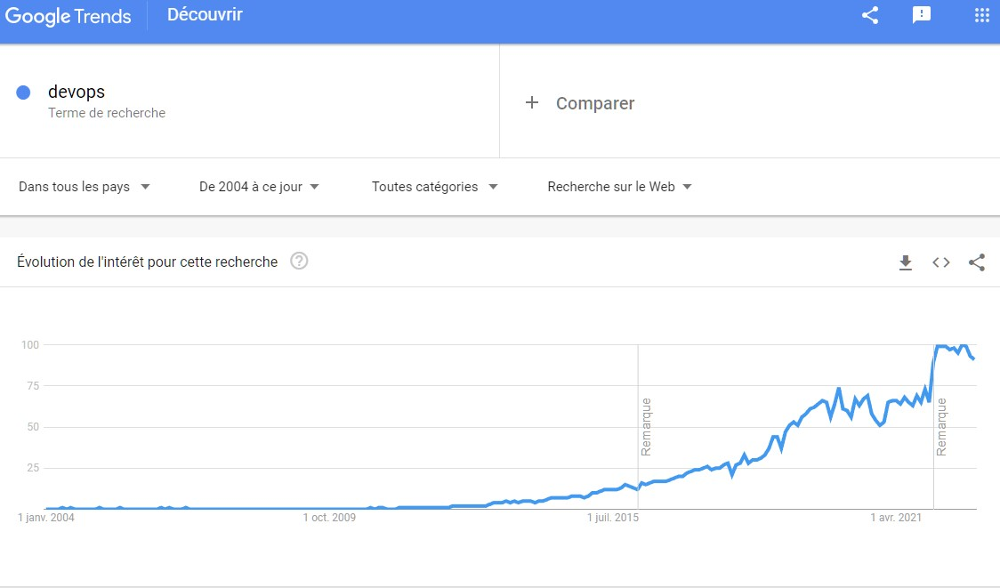

DEVOPS
Pour de vrai
Qu'est ce que DevOps pour vous ?
Constat
1 entreprise = n silos (achats, direction métier, développeurs, exploitants...) = n objectifs  Les développeurs veulent changer le système, tout le tempsMais
Les opérateurs veulent conserver un système stable
Les testeurs veulent stabiliser une version pour exécuter leur campagne de tests
Soit le moins de changement possible!
...
Conséquence
L'organisation n'est pas alignée sur l'objectif de livrer un produit plus souvent, plus vite, et moins cher. C'est un goulot d'étranglement de la performance globale et finalement l'entreprise est pénalisée.

Mais alors...comment faire?
Plus vite, moins cher, plus souvent, mieux, ça me rappelle quelque chose...
Retour aux fondements : l'Agilité, c'est quoi ?
Mettons de coté les buzzwords
Oui mais d'où je pars et jusqu'où je peux aller ?
Le sursaut Agile
- Organisations chaotiques : pas de méthodes, "ça tombe en marche"
- Organisations théoriques : méthodes riches, processus, standards, top-down
- Organisation efficaces : ça marche, mais c'est fatigant (startups)
- Organisation efficiente : ça marche et c'est facile : l'efficacité est maîtrisée
Le sursaut Agile
Devenir efficace par l'auto-organisation intuitive à l'échelle d'un projet, sur une durée limitée. En période de stress intense, l'équipe réagit en état d'urgence pour éteindre le feu et tente le tout pour le tout :
- Taskforce et réunion des compétences, travail ensemble au quotidien
- oubli des règles faisant obstacle à un fonctionnement fluide
- MAJ déployées aussi souvent que possible, test, feedback
La naissance d'une tendance
Mouvement Agile
- Scrum en 1995
- Extreme Programming en 1999
- Manifeste Agile en 2001
- Lean manufacturing chez Toyota 1900-1993
Agile + Lean = Lean Software Development (2003)
Puis DevOps (2009) et Continuous Delivery (2010).
DEVOPS : une définition
"DevOps est la pratique selon laquelle les ingénieurs d'exploitation et de développement participent ensemble à l'ensemble du cycle de vie des services, de la conception au soutien de la production en passant par le processus de développement. DevOps se caractérise également par le fait que le personnel d'exploitation utilise beaucoup des mêmes techniques que les développeurs pour leur travail sur les systèmes.”
Quels moyens?

DEVOPS comme extension de l'Agilité.
Comme l'Agilité, la maturité DevOps se mesure par l'application de concepts
Si l'on s'en tient à la définition théorique de DevOps, en appliquant des changements sur le build, l'architecture et le déploiement, alors on grandit en maturité.
Oui, mais
- livrer + souvent sans stratégie de test adaptée = livrer + souvent des bugs
- livrer + vite sans vision produit ni UX = livrer + vite le mauvais produit
- livrer - cher pour dépenser + en gestion documentaire = revient + cher
DevOps a donc rendu des organisations efficaces, puis avec le temps s'est étendu à toute une série d'autres concepts liés les uns aux autres. En mettant en place ces concepts, l'organisation devient efficiente.
Les concepts
CI/CD
- CI (intégration continue) : assurer une livraison continue de code
- CD (déploiement continu) : CI + assurer un déploiement continu de fonctionnalités
- continuous delivery : CI+CD

Les microservices / la SOA
Dans une architecture monolithique, à chaque changement :
- build intégral
- déploiement intégral
- duplication intégrale sur chaque serveur cible

Dans une architecture orienté services / microservices, à chaque changement :
- chaque service porte une seule responsabilité
- chaque service peut être déployé indépendamment
- à chaque service son équipe / sa BDD / son langage / sa plateforme...
La containerisation
Evolution des machines virtuelles, permettant d'embarquer dans une même image ("paquet") l'application, et son environnement d'exécution minimal sans l'OS
Avantages
- Portabilité : l'application est autonome, déployable et exécutable sur n'importe quelle machine avec un OS et un moteur d'exécution de container. Build once, deploy anywhere.
- Isolation : chaque container est une application avec son propre cycle de vie et indépendante des autres
#microservices - Orchestration : des outils permettent de créer, déployer, orchestrer les containers automatiquement pour par ex les mettre à l'échelle
#kubernetes
Infra as Code
Considérer que l'architecture fait partie du source control, la manipuler comme une partie du code du projet

Avantages
- Augmente la cohérence entre architecture et application
- Instanciation idempotente donc fiable, et automatique de l'infrastructure à partir de scripts.
#terraform #forge
Le pipeline de déploiement
Système permettant d'automatiser davantage les étapes traditionnellement manuelles, d'intégration du nouveau code produit, vers la production.
Livrer un changement devient un scénario.

Avantages
- Intégration automatique du code
#CI - Déploiement automatique du code
#CD - Les erreurs sont identifiées au plus tôt
#failfast - Le pipeline c'est aussi du code !
#everythingascode
Everything As Code
Le code de l'infra et des pipelines fait partie du code du projet. La documentation aussi, les tests aussi, la sécurité ainsi que tout ce qui peut être codé.
Le support de cette présentation est du code, il fait partie du code d'un projet et pèse 15 Mo.

Avantages
- Augmente encore la cohérence entre documentation, application, tests, etc.
- Le fond de la documentation est agnostique de la forme
#docascode
Feature Flipping
Activer / désactiver dans le produit des fonctionnalités sans forcément relivrer de code.

Avantages
- Déployer en continu
- Sécuriser les déploiements
- Permet d'expérimenter une fonctionnalité
- Customiser l'application par populations
- Gérer les fonctionnalités payantes
- Permet la distinction code stable / code terminé.
- Minimiser le nombre de branches dans le code.
Test Driven Development
Avant, le test était considéré comme un moyen de détecter les anomalies, à la fin du développement.
Le test driven development considère les tests comme la spécification du produit, avant son développement
Une fonctionnalité devient prête à développer quand elle a au moins 1 test d'acceptance et les critères d'acceptation associés.
scenario “Gold-level customer with $50 in shopping cart”, {
given “ a Gold-level customer”
when “their shopping cart totals $50 or more”
then “ they should receive a 15% discount off the total price”
}
Avantages
- + de communication entre PO et équipe de dev
- La specification par l'exemple pour un meilleur partage de la source de vérité
#SSOT - Le test est au rouge tant que la fonctionnalité n'est pas terminée.
Test en continu
Avant, la plupart des tests étaient exécutés manuellement par des humains, avec peu de tests automatisés → antipattern
Le test en continu augmente la part de tests automatisés

Avantages
- Livrer en continu devient possible
- L'humain ne conserve que les tâches à forte valeur ajoutée
- L'assurance de gagner en sécurité (non-régression)
Conclusion
Devops va t il mourir ?
Spoiler alert
Non. 
Que retenir
Un client demande du DEVOPS :
- dans 90% des cas besoin de compétences de développement
- dans 10% des cas besoin de compétences en coaching agile
L'important :
- Savoir exprimer ses intentions et contraintes
- Faire preuve d'empathie
- Partager ses contraintes
- Accepter celles des autres